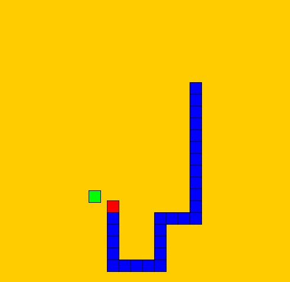

Snake
This is a simple single player game of snake made using the Processing API and Java. Although it supports
networking, other clients connected to the server can only be spectators to the server player.
Make the snake as long as you can without crashing into a wall or the snake itself!
Installation instructions:
- Download the zip folder at the "Download here" link below.
- Extract the contents from the zip folder to a directory on your PC.
- To start the game, double click on the MultithreadedServer.jar file.
- To test the networking/client spectator capabilities, double click on MultithreadedClient.jar ONLY while MultithreadedServer.jar is already running.
Download here
